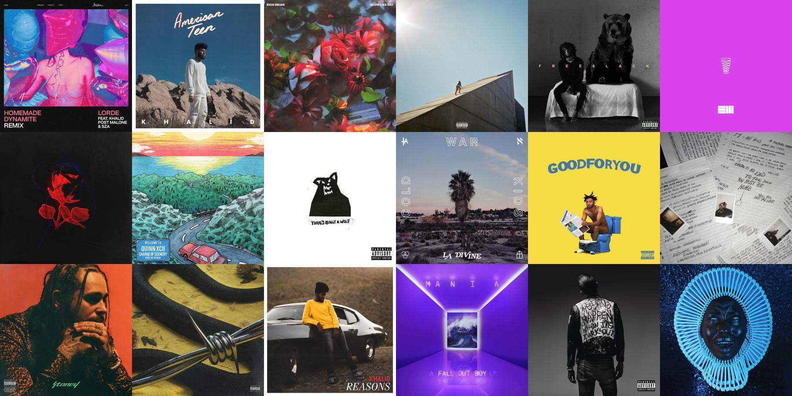

×
Wallify

Wallify is a web application which allows users to create custom wallpapers using the data from their Spotify account. Users can select varying time frames and the app will return a wallpaper with the album covers of their 18 top played tracks during the specified period. Users also have the option to customize their wallpaper, by moving album covers around, and can download their final version! I worked on the UI/UX of this application as well as the backend.